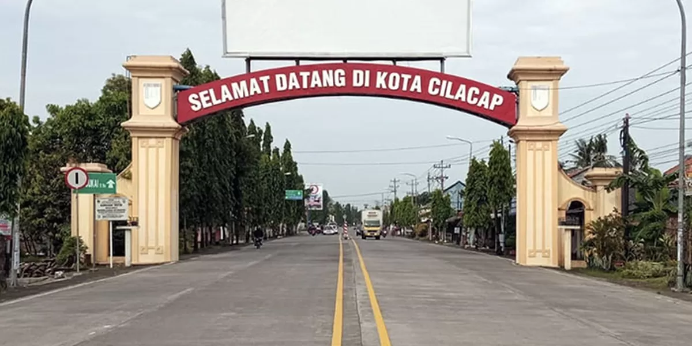
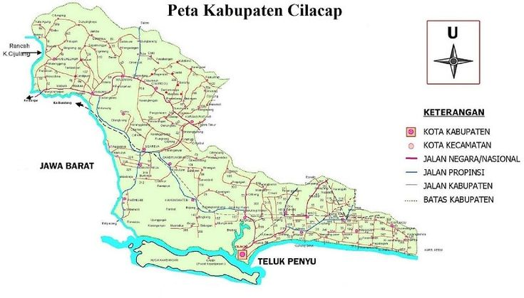
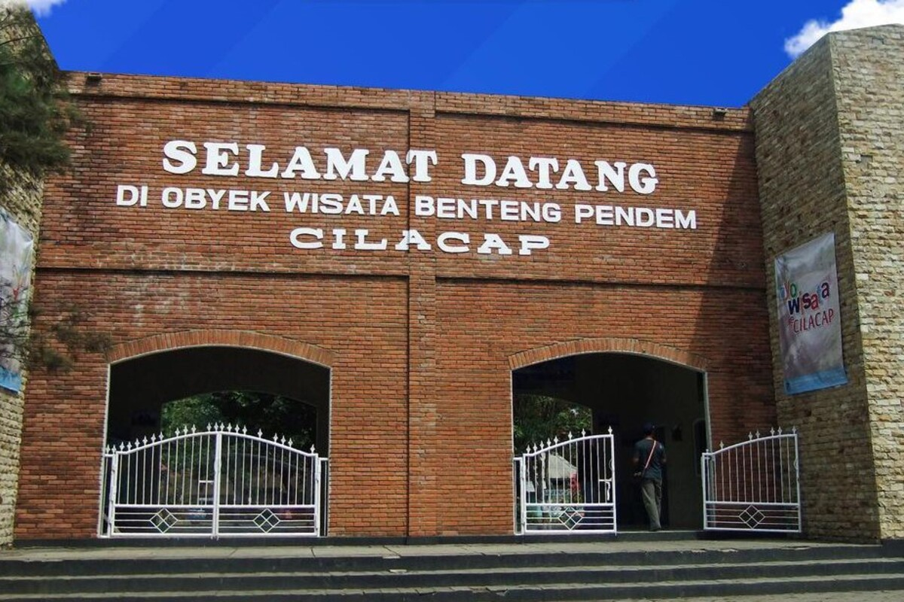

Sejarah

Nama Cilacap berasal dari kata "ci" yang berarti air dan "lacap" yang berarti deras.
Secara historis, wilayah ini berkembang sebagai pelabuhan penting di pesisir selatan Jawa
pada masa kolonial Belanda.
Cilacap juga memiliki peran strategis dalam bidang militer dan perdagangan karena
letaknya yang berbatasan langsung dengan Samudra Hindia serta memiliki pelabuhan
alam yang cukup besar.
Geografis

Kabupaten Cilacap terletak di bagian selatan Provinsi Jawa Tengah dan berbatasan langsung
dengan Samudra Hindia. Wilayahnya terdiri dari dataran rendah, perbukitan, hingga kawasan
hutan di bagian barat.
Cilacap memiliki Pulau Nusakambangan yang terkenal serta beberapa sungai besar yang
mendukung aktivitas perikanan dan pertanian masyarakat.
Wisata
Cilacap memiliki berbagai destinasi wisata alam dan sejarah yang menarik untuk dikunjungi.
Pantai Teluk Penyu

Pantai Teluk Penyu merupakan ikon wisata Cilacap yang menyajikan pemandangan laut
selatan dengan latar belakang Pulau Nusakambangan.
Benteng Pendem

Benteng Pendem adalah peninggalan Belanda yang menjadi salah satu destinasi wisata
sejarah paling terkenal di Cilacap.